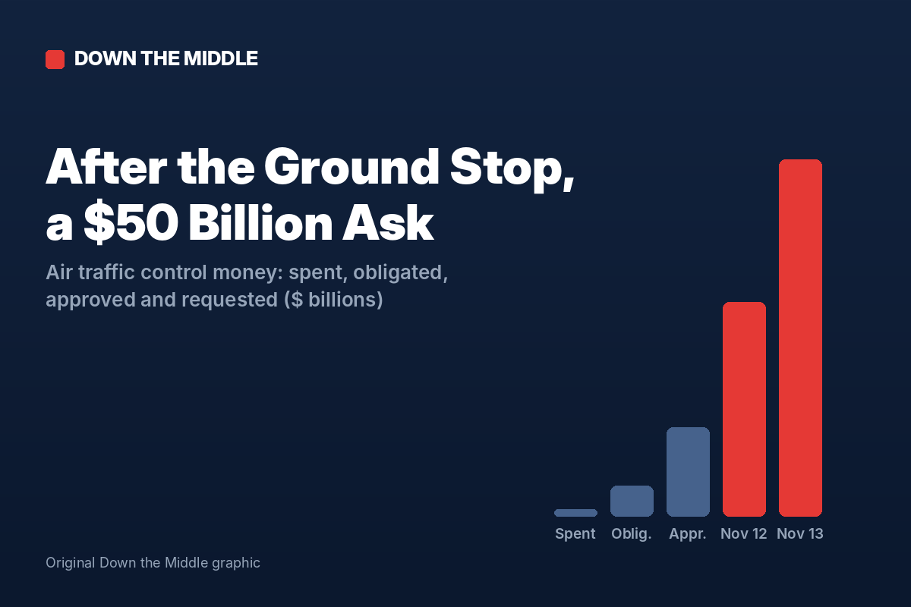
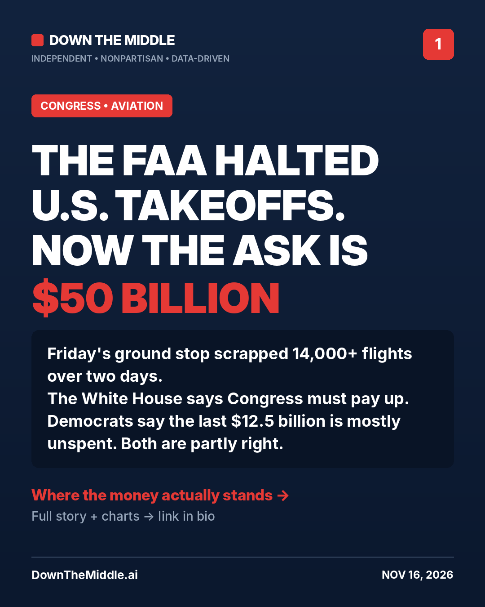
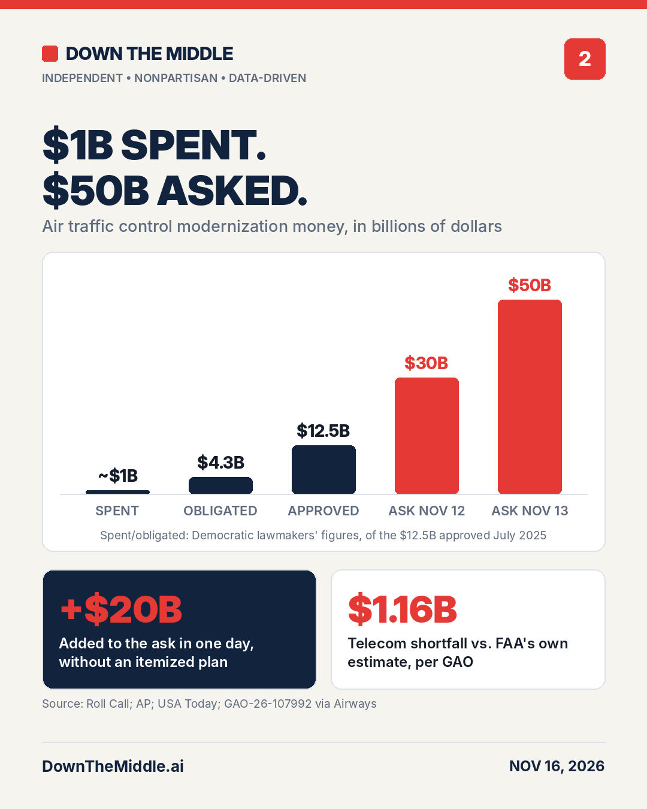

After the FAA Ground Stop, a $50 Billion Ask. Here’s Where the Last $12.5 Billion Stands.
November 16, 2026 · Independent, nonpartisan analysis

On Friday afternoon the FAA stopped departures across the country for more than four hours after a network failure disrupted the radio and radar links controllers rely on. [3] [4] More than 14,000 flights were canceled across Friday and Saturday. [5] AP put the number of stranded passengers at about 1.5 million. [3]
By Friday evening, Transportation Secretary Sean Duffy was calling for about $50 billion to rebuild the system. Two days earlier, he and budget director Russ Vought had sent lawmakers a $30 billion request. [1] Speaker Mike Johnson says Congress will take up the money in its year-end package. Democrats, who take over the House in January, counter that most of the $12.5 billion Congress approved in July 2025 hasn’t been spent. [1] [2] On Monday, President Trump told reporters he was “sure” Congress would provide more. [2] We checked what the record shows.
By the numbers
The documented figures behind the fight.
What happened Friday
Duffy says a router newly installed by contractor L3Harris at a remote FAA site flooded the network with more than 1,000 connection attempts every four to five seconds. [4] The FAA cited excess data at a radar site in Amarillo, Texas, and a radio site in El Dorado, Arkansas. [1] Officials say they have seen no sign of a cyberattack, and the root cause is still under investigation. [4] FAA Administrator Bryan Bedford estimated that about 9,000 commercial flights and 3,000 private flights could not be completed on Friday. [4] The FAA said operations would be back to normal by the end of Sunday. [6]
Three days of disruption
Flights canceled or not completed, by day. Hover or tap a bar for details.
*Friday’s figure is the FAA’s estimate of commercial flights that could not be completed, which is a different measure from airline cancellation counts. Saturday is FlightAware’s count as of 9 p.m. ET. Sunday is ABC News’s count. These come from different trackers at different cutoffs, so they should not be added together. [4] [5]
Insight 1
“Unspent” and “can’t be used” are both true
Democrats are right that little of the 2025 money is out the door. Reps. Rick Larsen and André Carson say $4.3 billion of the $12.5 billion has been obligated and about $1 billion spent. AP reported similar figures. [3] [6] Duffy is also right about a key limit. The law set the money aside for specific purposes, and he says none of it can pay for the new telecom network he wants. That’s why he’s asking for flexible transfer authority. [1] [2] There’s a third fact that neither side is highlighting. According to Reps. Rosa DeLauro and Jim Clyburn, citing apportionment documents, the White House budget office itself is holding more than $5 billion of the 2025 money until Oct. 1, 2027. [1] Some of the money is “unspent” because the administration’s own budget office is holding it back.
The money: spent, approved and requested
Air traffic control modernization funding, in billions of dollars. Hover or tap a bar for the source.
“Spent” and “obligated” are figures from Democratic lawmakers (Reps. Larsen and Carson); AP reported about $4 billion committed and about $1 billion spent. A separate Democratic count by Reps. DeLauro and Clyburn finds $9 billion unspent out of $14.4 billion, a total that also includes $1.9 billion from the FY2026 transportation spending law. The administration has not published its own breakdown. [1] [3] [6]
Insight 2
The documented gap is far smaller than $50 billion
In September the Government Accountability Office compared what Congress gave the FAA with what the agency estimated it needed. Phase one of the new system got $9.03 billion against an FAA estimate of $10.615 billion. For telecom specifically, $4.75 billion was appropriated against an estimate of $5.91 billion, leaving a $1.16 billion gap. The GAO put phase two at about $10.2 billion, not counting facilities. [7] [8] By our math, that adds up to roughly $12 billion in documented need. Bedford gave a similar figure on Saturday, about $10.1 billion more to finish modernization. [4] The administration’s September $30 billion plan reaches beyond the air traffic system itself, with roughly $10 billion each for control towers, telecom and technology, and airports. [7] As of Monday morning, the additional $20 billion had no detailed spending plan. [1] [2]
What GAO found: phase one was underfunded, but not by much
FAA’s own cost estimate vs. what Congress appropriated in July 2025, in billions of dollars.
Figures are from GAO report GAO-26-107992 (Sept. 2026), as reported by Airways. Gaps are Down the Middle’s calculation. Phase two, estimated at about $10.2 billion excluding facilities, is not shown. [7] [8]
Insight 3
The trigger was a new part on an old network
Both parties describe the problem as aging equipment. Johnson said some gear dates to the 1980s, and Trump compared the system to old equipment that “had a heart attack.” [1] [2] But by the administration’s own account, the failure began with a newly installed router during routine work. [4] The FAA’s Q&A says the outage was not tied to the wire-replacement project. [1] [10] The controllers’ union says this kind of work should be done when the fewest planes are flying, and Duffy says daytime maintenance will be reviewed. [4] This kind of failure has happened before. In 2009, a router misconfiguration at the same network’s contractor, then Harris Corp., disrupted 129 air traffic facilities, according to the DOT inspector general. [4] More money can pay for a new network. It can’t on its own prevent installation and testing mistakes.
How we got here
Solid dots are official actions and documented events. Dashed dots are disputed claims or scheduled events.
- Jul 2025Congress
Congress approves $12.5 billion for air traffic control in the 2025 reconciliation law, including $4.75 billion for telecom. [1] [7] - Sept 2026GAO
GAO compares the FAA’s cost estimates with appropriations and finds a phase-one shortfall. [7] [8] - Sept 28DOT / Senate GOP
Duffy and Sen. Eric Schmitt (R-Mo.) roll out a $30 billion request through the Modern Skies Act. [9] - Nov 12DOT / OMB
Duffy and Vought formally send the $30 billion request to lawmakers. [1] - Nov 13, 3:54 p.m. ETFAA
A nationwide ground stop begins. It is lifted that evening after more than four hours. That night, Duffy calls for about $50 billion. [4] [6] - Nov 14DOT
Duffy points to a router installed by L3Harris and rules out a cyberattack. More than 6,400 more flights are canceled. Cause under investigation [4] - Nov 15Congress
DeLauro and Clyburn say $9 billion remains unspent. Johnson says up to $50 billion will go in the year-end package. [1] - Nov 16White House
Trump says he is “sure” Congress will provide more. DOT and FAA staff brief congressional committee staff on the request. [1] [2] - Dec 11Congress
Government funding expires, the deadline for any year-end package. Scheduled [2]
How each side makes its case
Same outage, different lessons
Each side’s position, described in our own words and checked against the data.
The administration & GOP leaders
- The network is obsolete and will keep failing until it is replaced. Duffy warned there will be “more of these” without new funding. [5]
- The 2025 money is restricted to specific uses, so Congress needs to provide new, flexible funding all at once. [1] [2]
- Trump and Duffy blame earlier administrations for years of underinvestment. [1]
Democrats
- Most of the money already approved is still unspent. DeLauro called the request a “$50 billion ransom” with no real plan behind it. [2]
- They want the $30 billion explained at an early-December hearing with Bedford, and want investigations next year. [1]
- Some say unspent immigration-enforcement money could be redirected to cover it. [1]
What the data shows
- About $1B has been spent of $12.5B, but part of the rest is legally restricted or held back by the administration’s own budget office. [1] [6]
- By our math from GAO’s figures, about $12B remains needed for the core system, well short of $50B. [7]
- The trigger was new equipment being installed, not old equipment wearing out. [4]
Down the middle
Both parties agree the system needs replacing. The FAA’s own safety review called the network obsolete in 2023, and the GAO found the 2025 money fell short of the agency’s own estimate. [4] [7] Where they disagree is on how much is needed and how fast. The administration’s request jumped from $30 billion to $50 billion in a single day, and the extra $20 billion has no itemized plan. Democrats’ “it’s unspent” argument leaves out that some of the money can’t legally be used for a new network. It also leaves out that large programs often take years to spend their money. Duffy says the full $12.5 billion will be committed by 2028 or early 2029. [1] Before the new majority takes over in January, the lame-duck Congress has to decide whether to approve the full $50 billion, a smaller amount tied to GAO’s figures, or more flexibility to use the money already approved.
What to watch
The itemized plan: whether DOT shows what the extra $20 billion would buy. [2] The root-cause report: whether the router itself was faulty or was installed incorrectly, and what that means for L3Harris’s contract. [1] Dec. 11: the government-funding deadline and the year-end package. [2] Early December: Bedford’s hearing before House Transportation. [1] January: Democrats take over House committees and have promised oversight. [1]
Share it


Sources and primary documents
- [1] Roll Call — Aviation funding becomes political football in lame-duck session (Nov 16, 2026)
- [2] USA Today — Ground stop chaos spurs fight in Congress over air traffic control funding (Nov 16, 2026)
- [3] Al Jazeera / AP — After a nationwide ground stop, US faces aviation infrastructure questions (Nov 16, 2026)
- [4] Yahoo News — FAA ground stop live updates: Duffy blames contractor L3Harris (Nov 14–15, 2026)
- [5] ABC News / ABC7 — FAA ground stop live updates (Nov 13–16, 2026)
- [6] HNGN — Congress weighs $50 billion air traffic fix after ground stop (Nov 15–16, 2026)
- [7] Airways — Duffy’s $30 billion ATC and airport modernization plan, with GAO cost comparison (Sept 23, 2026)
- [8] GAO — GAO-26-107992, Air traffic control modernization (Sept 2026)
- [9] Washington Examiner — Duffy asks Congress to fund $30 billion effort to modernize air traffic control (Sept 28, 2026)
- [10] FAA — Nationwide ground stop: questions and answers (Nov 15, 2026), as described by Roll Call
- [11] CNN via CTV News — FAA slashes hiring target for air traffic controllers (May 15, 2026)
- [12] AeroCorner — The FAA has 11,027 certified air traffic controllers (Nov 2, 2026)
Spent and obligated figures are Democratic lawmakers’ and AP’s figures, not an audited total; the administration has not released its own breakdown. The cause of the outage is still under investigation. Gaps and the roughly $12 billion “documented need” figure are Down the Middle’s calculations from the GAO figures cited. The controller target of 12,563 comes from the FAA’s 2026–2028 workforce plan, which lowered it from 14,633. [11] Reflects reporting available November 16, 2026.